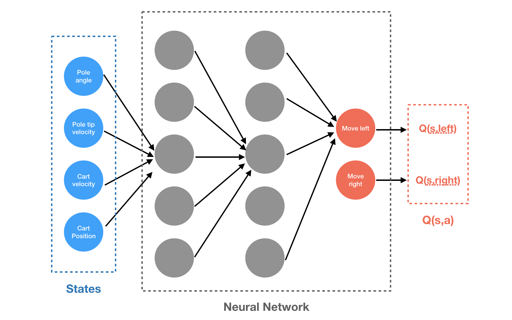
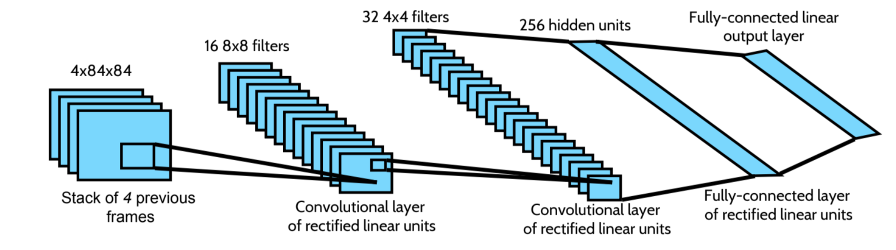

Deep Q Network¶
If the state or action spaces become continuous, we need to represent a function over a continuous domain as we can’t enumerate all values ! In order to use parametrized representation, we can either use linear representation to represents continuous function, using features and a vector of parameters or use FFNN.
{2}
Motivations for Deep RL : approximation with deep networks can be very accurate, and rely on efficient backprop. Idea : use a deep neural network architecture to learn the optimal Q-function in a Q-learning algo.
The Q-network in DQN (with finit space of actions) is a parametrized representation of the critic \(Q(s_t, a_t | \theta)\), equivalent to the Q-table. One find the action by taking the max (as in Q-learning).
Limitation : it requires one output neuron per action though.
The learning of the Q-function is inspired by supervized learning (ie minimize a loss-function)
ex : \(L(s,a) = (y^{*}(s,a) - Q(s_t, a_t | \theta))^2\) with backpropagation on weight \(\theta\).
In the Q-network, one should minimize the Reward Prediction Error (RPE) = Temporal Difference error (TDE), for each sample i, the error \(\delta_i\) should converge to 0 :
\(\delta_i = r_i + \gamma \max_a Q(s_{i+1}, a | \theta) - Q(s_i, a_i| \theta_i)\)
Thus, given a minibatch of N samples \(\{(s_i, a_i, r_i, s_{i+1})\}\), one computes :
\(y_i = r_i + \gamma \max_a Q(s_{i+1}, a | \theta')\)
then update \(\theta\) by minimizing the loss function \(L = \frac{1}{N} \sum_i (y_i - Q(s_i, a_i|\theta))^2\)
First observation, this is not stable (for the same input, the label/target changes constantly overtime) and approximating Q-value is not exactly a supervised pb (where the desired output is constant w.r.t one input) as the target \(y_i = r_i + \gamma \max_a Q(s_{i+1}, a | \theta)\) is itself a function of Q.
Second issue, in most ML algo, samples are assumed to be iid, but it is obviously not the case of behavioral samples \((s_i, a_i, r_i, s_{i+1})\). The idea is then to break correlation between samples by putting them into a buffer and extract them randomly. If not, the model may over-fit for some groups/classes of samples at different time and the solution won’t be generalized. Question to ask yourself is how to choose the size of the RB and hot to put samples in it.
target \(= R(s,a,s') + \gamma \max_{a'} Q_k(s' a' | \theta_k)\), non-stationary target.
\(\theta_{k+1} = \theta_k - \alpha \nabla_\theta \mathbb{E}_{s'\sim p(s'| s, a)} \left[ (Q_\theta(s,a) - \mbox{target}(s'))^2\right]_{\theta = \theta_k}\), update step correlated within trajectories.
To bypass this, two tricks :
Trick 1 : Stable Target Q-learning / Target Network : key idea is to do “period of supervised learning” by introducing a second network, the target network :math:`Q’(..| theta’)`. One fixes the Q-values temporarily (fixing parameters \(\theta'\)), so that changes in \(\theta\) don’t impact \(\theta'\), target are not moving, and thus have limited unwanted effect on training.
\(L_i (\theta_i) = \mathbb{E}_{s,a, s', r} \sim D \left( r+\gamma \max_{a'} Q'(s', a', \textcolor{red}{\theta^{*}}) - Q(s, a, \theta_i) \right)^2 \mbox{, with fixed } \theta^{*} \mbox{ for N steps}\)
To do so :
initialize Q’ with same values as in Q.
learn on Q with fixed \(y_i = r_i + \gamma \max_a Q'(s_{i+1}, a | \theta')\)
from time to time, update Q’ with Q (:math:`theta’ is updated to theta only each K iterations)
This makes the process much more stable. - Trick 2 : Replay Buffer Shuffling / Experience Replay :
The Replay Memory stores the transitions that the agent observes, allowing us to reuse this data later. By sampling from it randomly, the transitions that build up a batch are decorrelated (or at least, it forms a dataset stable enough for training) It has been shown that this greatly stabilizes and improves the DQN training procedure.
Ex : put last 10000 video frames (=transitions) into a buffer and sample mini-batch of 32 samples from this buffer to train a deep network.
Remark : Experience Replay has the largest performance improvement in DQN, where Target Network’s impact is significant but not as crucial as replay.
DQN Algorithm with Experience Replay :
[0] Initialize the replay memory D to capacity N
Initialize action-value function Q with random weigth \(\theta\) Initialize target action-value function \(Q^*\) with weigth \(\theta^* = \theta\)
For episode 1 .. M do :
Initialize sequence \(s_1 = \{x_1\}\) and preprocess sequence \(\phi_1 = \phi(s_1)\)
For t = 1 .. T do :
with proba \(\epsilon\) select random action \(a_t\)
with proba \(1 - \epsilon\) select action \(a_t = \argmax_a Q(\phi(s_t), a | \theta)\) - execute action \(a_t\) in emulator : observe reward \(r_t\) and image \(x_{t+1}\) - set \(s_{t+1} = (s_t, a_t, x_{t+1})\) and preprocess \(\phi_{t+1} = \phi(x_{t+1})\) - store transition (\(\phi_t, a_t, r_t, \phi_{t+1}\)) in D - sample random minibatch of transition ((\(\phi_j, a_j, r_j, \phi_{j+1}\)) from D - set \(y_i = \left\{\n \x08{ll}\n r_{j} & \mbox{if episode terminates at step j+1} \\n r_j + \gamma \max_{a'} Q^* (\phi_{j+1}, a', \theta^*) & \mbox{otherwise.}\n \n\right.\) - perform Gradient Descent step on \((y_i - Q (\phi_{j}, a_j, \theta))^2\) w.r.t \(\theta\) (network parameter) - Every C step, reset \(\theta^* = \theta\)
Remark : typically, \(\phi\) preprocess the last 4 frames/images, so as to represent the state that captures motion.
Implementation details:
loss function: Huber loss, which is quadratic for small values, and linear for large ones (resulting is less dramatic changes)
\(L\delta(x) = \left\{\n \x08{ll}\n \frac{1}{2}x^2 & \mbox{ for } |x|leq \delta \\n \delta (|x| - \frac{1}{2}\delta) & \mbox{otherwise.}\n \n\right.\)
optimizer : RMSprop
*\(\epsilon\)-greedy policy} : starts with \(\epsilon = 1\) then decreases to 0.1 or 0.05 with :
\(\pi(a|s) = \left\{ \begin{eqnarray} \frac{\epsilon}{m} + (1-\epsilon) \mbox{ if } a^{*} = \mbox{argmax}_a Q(s,a) \\ \frac{\epsilon}{m} \mbox{ ow, m being the nb of possible actions}\end{eqnarray}\right.\)
Architecture
[h!]
Remark : even during testing, one might want to keep \(\epsilon\) to a small value as a deterministic policy may stick in local optimum whereas a non-deterministic policy allows to break out for a chance to reach to reach a better optimum.
DQN’s improvements¶
DQN extensions in one question :
Double DQN : How to deal with DQN overestimation of the values of actions
Prioritized replay buffer : Why uniform sampling of our experience is not the best way to train
Dueling DQN : How to improve convergence speed by making our network’s architecture closer represent the problem we’re solving
N-steps DQN : How to improve convergence speed and stability with a simple unrolling of the Bellman equation and why it’s not an ultimate solution
Categorical DQN : How to go beyond the single expected value of action
and work with full distributions - Noisy networks : How to make exploration more efficient by adding noise to the network weights
Double DQN - DDQN¶
Paper : href{https://www.aaai.org/ocs/index.php/AAAI/AAAI16/paper/viewPaper/12389}{Deep Reinforcement Learning with Double Q-Learning }, van Hasselt, Guez, and Silver (2015)
Issue : in Q-learning, we use \(y_i = r_{i} + \gamma Q(s_{i+1},\argmax_a Q(s_{i+1}, a, \theta), \theta)\) as the target value for Q. Thus, the max operator in Q-learning results in the propagation of over-estimations (it creates a positive bias towards the Q-estimation). This max-operator is used for action choice and value propagation. Double DQN aims at separating both calculations with two different tables :
one Q-table for value propagation, the target network :math:`Q^*` to estimate the Q-value
one Q-table for choosing the max, the online network Q to greedy select the action.
It makes profit of the target network (propagation) and select the max on the standard Q-network. The CV is twice faster in practice. The loss becomes :
\(L_i(\theta_i) = \mathbb{E}_{s,a,s',r \sim D} \left( r + \gamma Q(s',\argmax_{a'} Q(s', a', \theta), \theta_i^*) - Q(s, a, \theta_i)\right)^2\)
where the target have changed from \(r + \gamma \max_{a'} Q(s', a', \theta_i^*)\) to \(r + \gamma Q(s',\argmax_{a'} Q(s', a', \theta), \theta_i^*)\)
In the paper, the authors demonstrated that the basic DQN has a tendency to overestimate values for Q, which may be harmful to training performance and sometimes can lead to suboptimal policies. The root cause of this is the max operation in the Bellman equation. Q(t+1, a) was Q-values calculated using our target network, so we update with the trained network every n steps. The authors of the paper proposed choosing actions for the next state using the trained network but taking values of Q from the target net. The authors proved that this simple tweak fixes overestimation completely and they called this new architecture double DQN.
Prioritized Experience Replay - Prioritized DDQN¶
Paper: href{https://arxiv.org/abs/1511.05952}{Prioritized Experience Replay}, Schaul and al, (2015).
Idea : improve the efficiency of samples in the replay buffer by prioritizing those samples according to the training loss.
In DQN, one choose samples/transitions from the replay buffer randomly/uniformly (supposed to break correlation between immediate transitions, the i.i.d assumption being a required condition of SGD method). The idea in Prioritized Experience Replay is the following : samples with a greater TD error improve the critic faster and hence, should be given a higher probability of being selected (pay less attention to samples already close to the target). Transitions are ranked according to the TD error value and selected proportionally to those priorities/rank. CV is usually twice faster.
Remarks : sampling with priorities introduces a bias in the data distribution - and needs to be “compensated” for the SGD to work. Authors used sampled weights, multiplied to the individual sample loss (\(w_i = (N\cdot P(i))^{-\beta}\), if \(\beta = 1\), sampling is fully compensated, \(\beta = 0\) no compensation at all).
Dueling Networks - Dueling DDQN¶
Paper : href{http://proceedings.mlr.press/v48/wangf16.pdf}{A Dueling Network Architectures for Deep Reinforcement Learning}, Wang et al., (2015).
Idea : Q-values our network is trying to approximate can be divided into two quantities: the value of the state V(s) and the advantage of actions in this state A(s, a) and dueling networks aims at replacing the last fully connected layer by two separate branches to compute Q(s, a) = V(s) + A(s, a) with the idea that it better captures some relevant aspect of the control task.
the advantage function \(A(s_i, a_i | \theta) = Q(s_i, a_i | \theta) - \max_a Q(s_i, a | \theta)\) corresponds to the regret for not performing the best action (\(<0\) unless it is the best action)
the value function \(V(s_i) = \max_a Q(s_i, a | \theta)\), which is simply the discounted expected reward achievable from a state.
The idea behind the Dueling Networks is to use \(Q(s_i, a_i | \theta) = A(s_i, a_i | \theta^A) + V(s_i, \theta^V)\), and compute Q as the sum of the value function V and a state-dependant action advantage function A. It uses to separate heads to compute V and A as in the following figure. [h!]

Remarks : to ensure the network will learn \(V(s)\) and \(A(s, a)\) as we want to, authors set the mean value of the advantage of any state to be zero by subtracting \(\frac{1}{|mathcal{A}|}\sum_{a=1}^{|mathcal{A}|} A(s,a)\) to the calculation of Q
\(Q(s, a) \approx V(s) + A(s, a) - \frac{1}{|mathcal{A}|} \sum_{a=1}^{|mathcal{A}|} A(s,a)\)
Multi-step learning (N-step)¶
Paper : href{https://link.springer.com/article/10.1007/BF00115009}{Learning to Predict by the Methods of Temporal Differences}, Sutton, R.S. 1988.
Idea : when acting optimally, if we want to update Q(s,a) and Q(s+1,a) when s+2 is terminal, we’d use the old version of Q(s+1,a) inside the Q(s,a) update whereas Q(s+1,a) can be update precisely and immediately. Looking a step (or n-step further) under optimality assumption would faster the training. (in practice, optimality not true and caution is needed)
When unrolling the Bellman update \(Q(s_t,a_t) = r_{t} + \gamma \max_a Q(s_{t+1}, a) = r_{t} + \gamma \max_a (r_{a, t+1} + \max_{a'} Q(s_{t+2}, a'))\) and assuming we act optimally (i.e our action \(a\) at the step t+1 was chosen optimally) we have now \(Q(s_t,a_t) = r_{t} + \gamma r_{a, t+1} + \gamma \max_{a'} Q(s_{t+2}, a'))\)
Unrolled for N steps gives, by rewriting \(R^{(N)}_t = \sum_{n=0}^{N-1} \gamma^{n} r_{t+n}\) : \(Q(s_t,a_t) =R^{(N)}_t + \gamma ^{N} \max_{a'} Q(s_{t+n}, a'))\)
This leads to multi-step variant of DQN which is defined by minimizing the alternative loss :
\(R^{(N)}_t + \gamma ^{N} \max_{a} Q(s_{t+n}, a, \theta^{*})) - Q(s_t,a_t, \theta)\)
Remarks : strictly speaking, omitting the max operator is not valid as we don’t necessary act optimally using an \(\epsilon\)-greedy policy, ie acting sometimes randomly. Tuning the N parameter is crucial to avoid unwanted effects (wrong updates that might overall break the training process)
Distributional RL - Distributional DQN¶
Paper : href{https://arxiv.org/abs/1707.06887}{A Distributional Perspective on Reinforcement Learning}, M.G. Bellemare, W. Dabney, R. Munos(2017)
Idea : replace Q-values with more generic Q-value probability distribution.
In stochastic/ non-deterministic environment, the Q-value that tries to approximate the DQN net is basically the expectation over all trajectories when following policy \(\pi\). \(Q^{\pi}(s,a) = \mathbb{E}_{\pi} (Z^{\pi}(s,a))\) where Z is introduced by \(Z^{\pi}(s,a) = \sum_{t\geq 0}\gamma^t r(s_t, a_t)_{|s_0 = s, a_0 = a, \pi}\)
The paper from M.G Bellemare et al introduces a new framework where Belleman equation are rewritten with random variables to fit the distributional point of view [See section on Distributional Reinforcement Learning]
Noisy Nets - Noisy DQN¶
Paper : href{https://arxiv.org/abs/1706.10295}{Noisy Networks for Exploration}, Fortunato et al (2017)
DQN uses \(\epsilon\)-greedy policy to select actions. The idea behind Noisy Nets is to replace this selection by adding parametric noise to the linear layer to aid exploration. It make use of a greedy policy to select action as we add a trainable parametrized noise to the FC layer of Q-network to explore actions. It addresses the issue of exploring the environment with the idea of learning exploration characteristics during training, instead of having a separate schedule related to the exploration.
The authors propose two ways of adding the noise, both of which work according to their experiments :
Independent Gaussian noise : For every weight in a fully-connected layer, we have a random value that we draw from the normal distribution. Parameters of the noise \(\mu\) and \(\sigma\) are stored inside the layer and get trained using backpropagation, the same way that we train weights of the standard linear layer. The output of such a ‘noisy layer’ is calculated in the same way as in a linear layer.
Factorized Gaussian noise: To minimize the amount of random values to be sampled, the authors proposed keeping only two random vectors, one with the size of input and another with the size of the output of the layer. Then, a random matrix for the layer is created by calculating the outer product of the vectors.